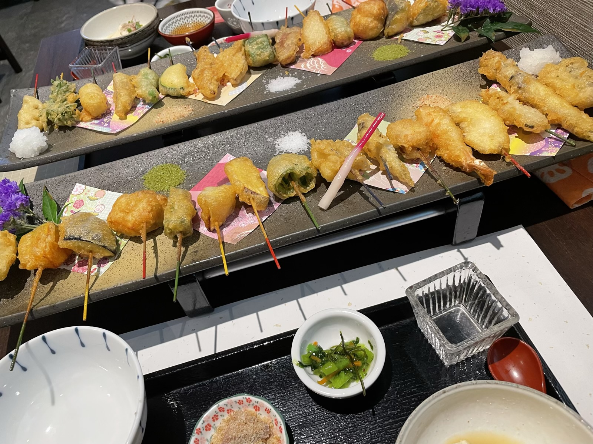
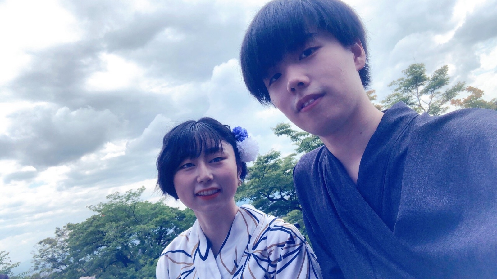
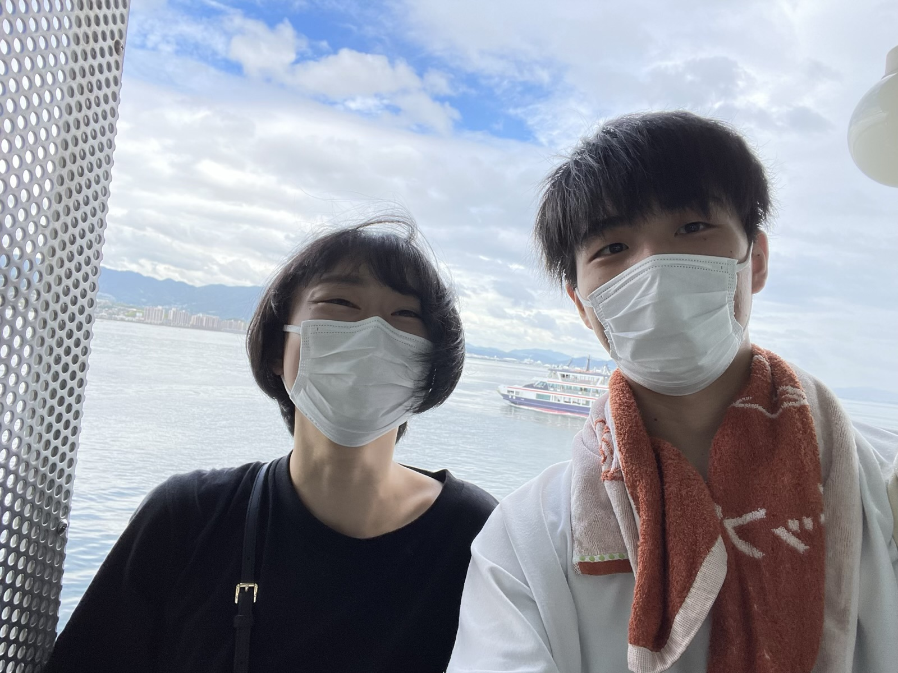
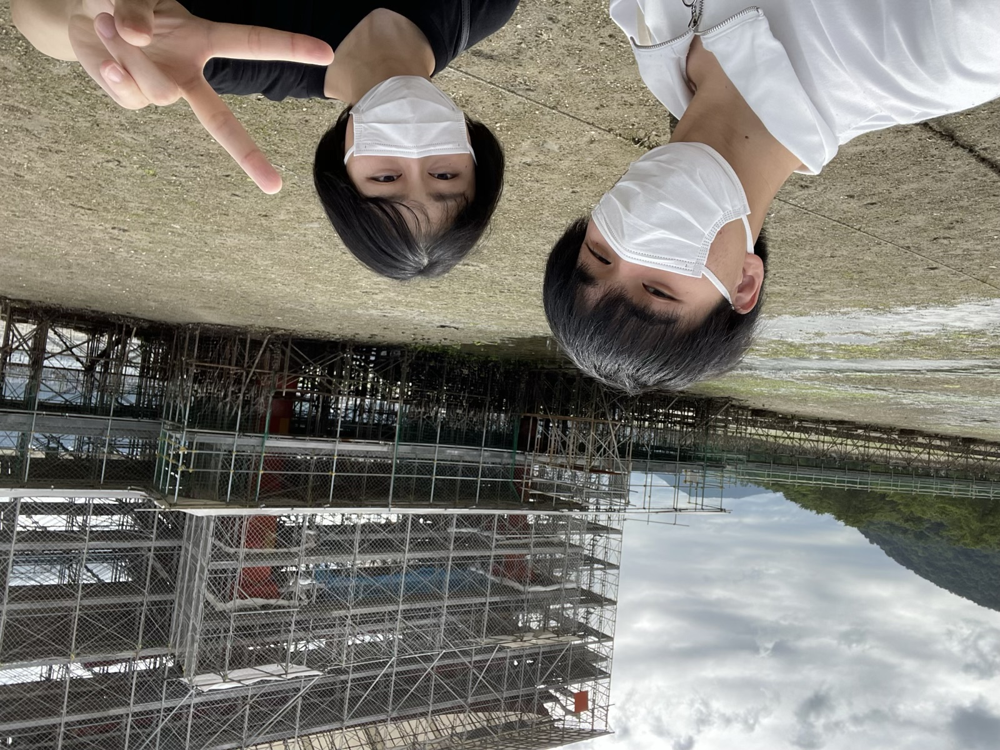
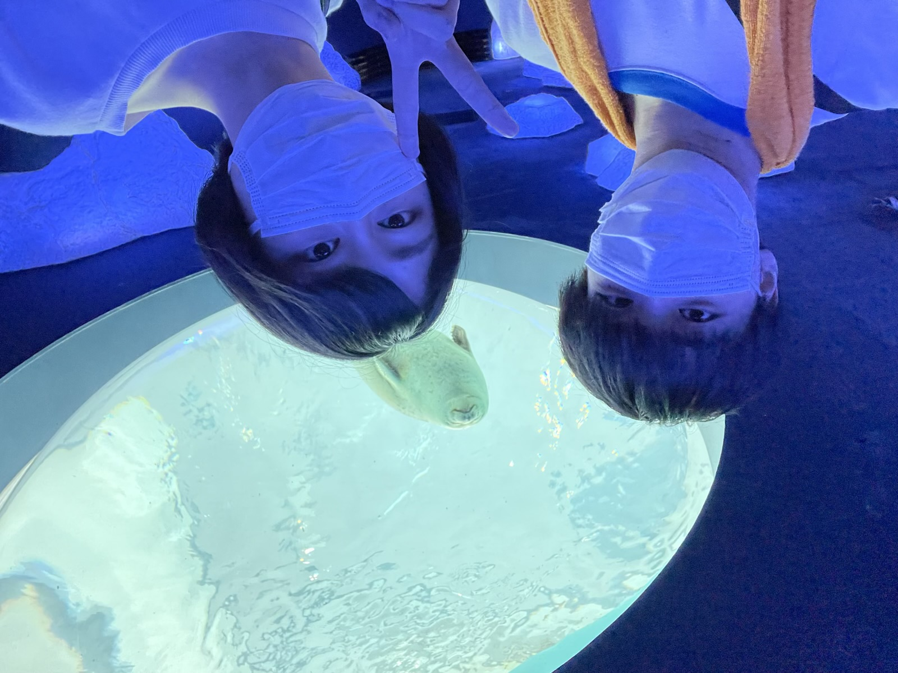
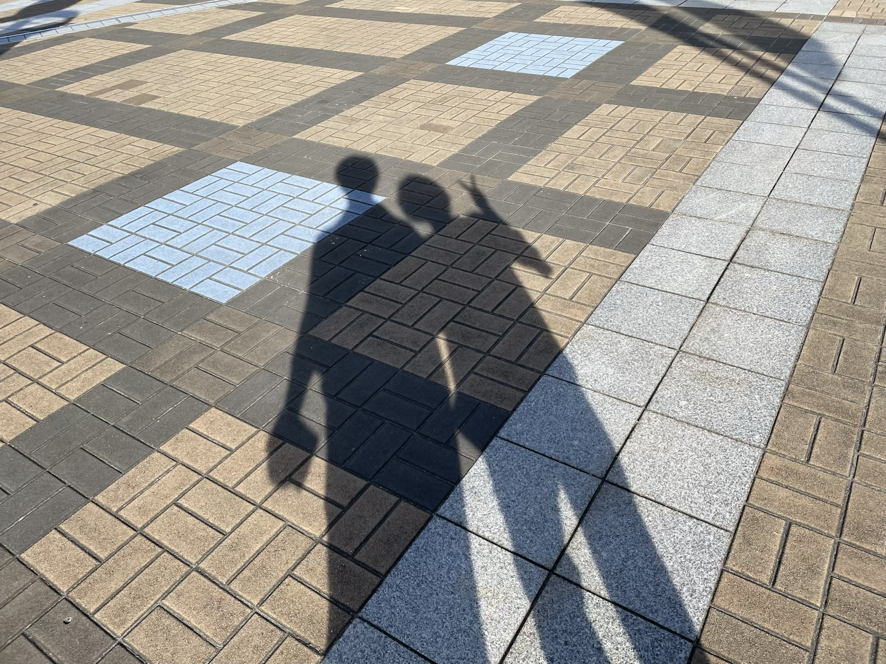
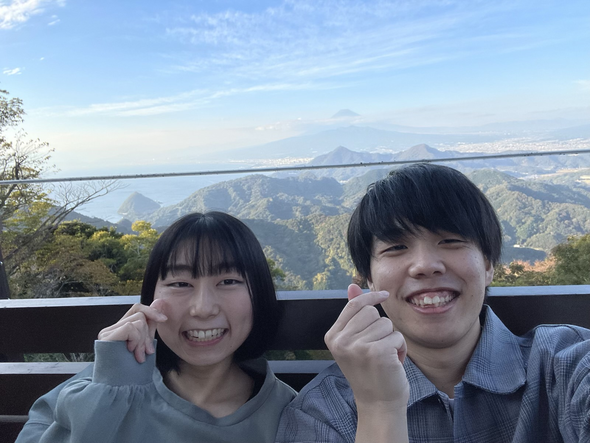
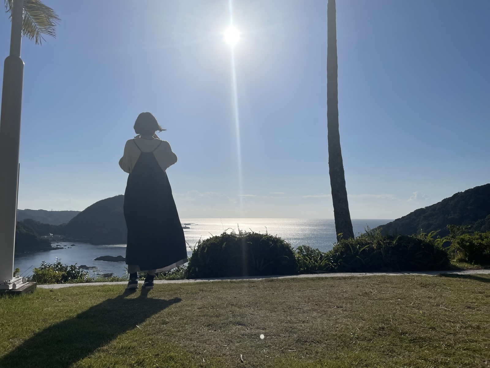
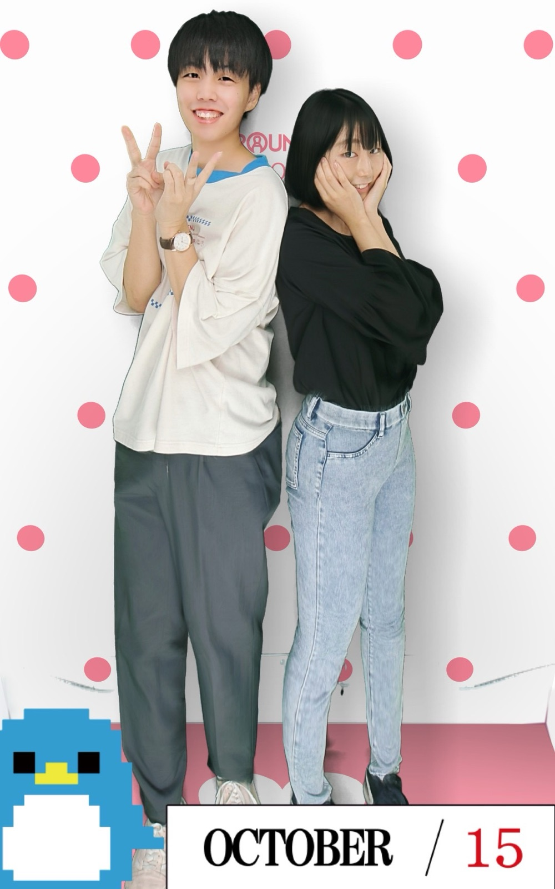

2022.06.22Yukata
浴衣デート
京都でレンタル浴衣して浴衣デート！
京都生活後半戦にして初めてくらいの京都っぽいデートだったね。
また浴衣デートしようね！



2022.07.30Hiroshima
広島旅行
マツダで野球見て、広島焼き食べて、フェリー乗って、厳島行って、穴子ももみじ饅頭も食べて。
厳島神社が工事中だったこと以外は充実の広島旅行だったね。笑
厳島神社リベンジと広島のボールを取りにまた行きましょう！
ps.あげ紅葉が大好きです。


2022.08.01Kaiyukan
海遊館
ユニバばっかでなんやかんや行ったことなかった海遊館！
奇跡のスリーショットです！！笑


2022.11.125th Anniversary
５周年
５周年記念旅行は、静岡！伊豆と下田！
伊豆で富士山が見える伊豆パノラマパークへ！ロープーウェイに乗って碧テラスへ！
天気も良くて、富士山もよく見えてよかった！


おまけPictures
おまけの写真
４年１１ヶ月記念くらいのモレラで撮ったプリクラ！
